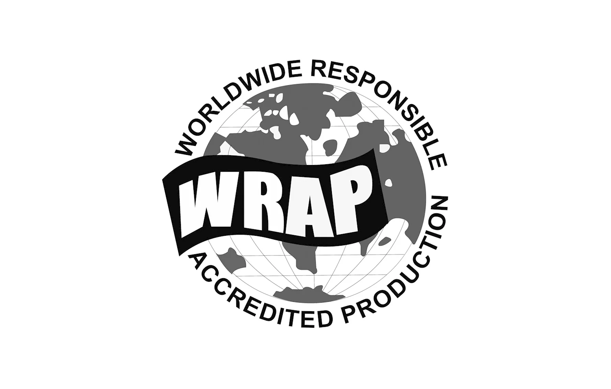
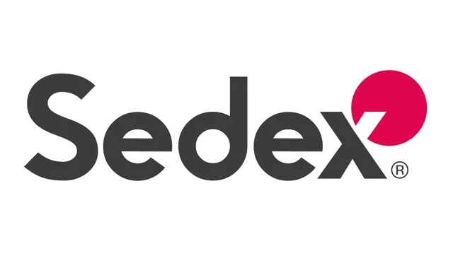
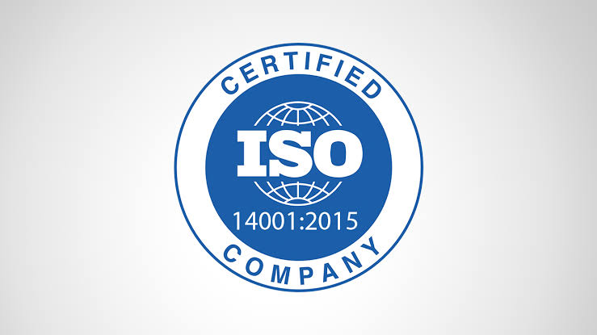
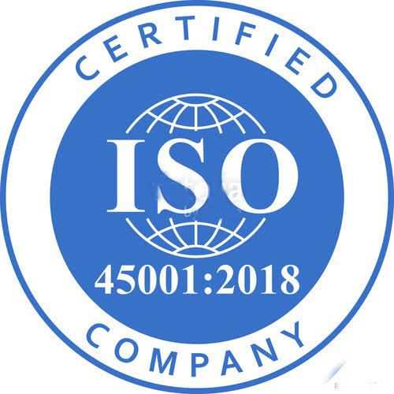
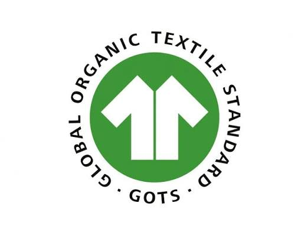
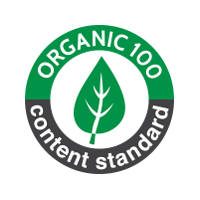
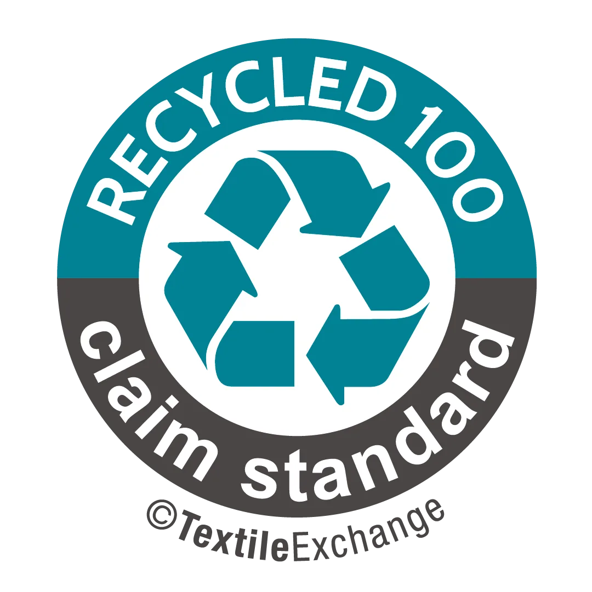
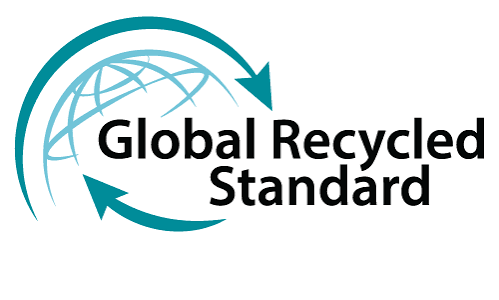
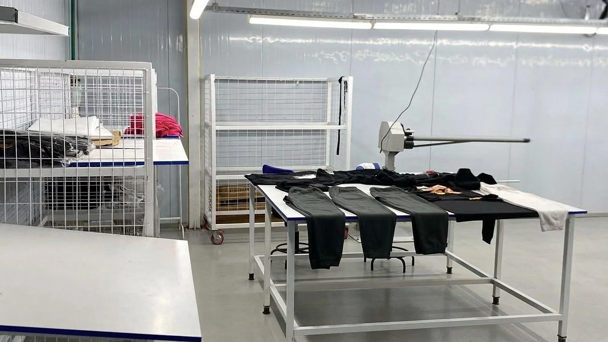
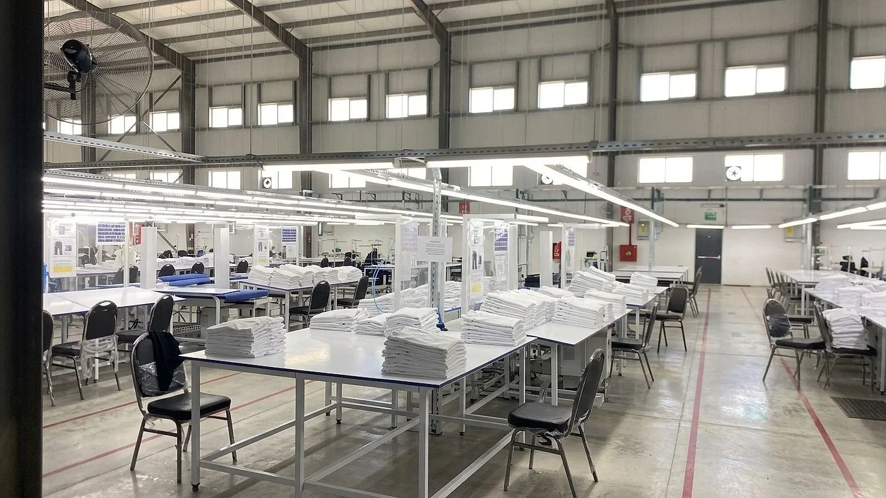

Checked three times. Certified nine ways.
Quality is a digitally managed system with a zero defects policy, audited to the standards our buyers ask for. Step through the three checks below.
Fabric inspection.
Every incoming roll passes through the fabric inspection machine. Defects, shade and weight are recorded against the roll number and the mill lot. A fault found here costs a roll. Found later, it costs an order.
In-line inspection.
Checks run inside each line while the garment is built, recorded by operation with the inspector's name and the corrective action. A fault is caught at the operation causing it, not at the end of the run.
Final inspection and metal detection.
Finished garments are inspected to the buyer's AQL, then every piece passes a calibrated metal detector inside a secured zone before the carton is sealed and scanned.
Audited to the standards buyers ask for.
Certificate numbers and copies go to buyers on request. Buyers with their own programmes, including Higg FEM, Better Cotton and brand codes of conduct, are supported, and anything further can be arranged.

WRAPsocial compliance
Sedex SMETAsocial audit- ISO 9001quality

ISO 14001environment
ISO 45001health and safety
GOTSorganic textile
OCSorganic content
RCSrecycled claim
GRSrecycled standard
Needles, metal, and pull tests.
Every broken needle is logged and every fragment recovered and matched before a replacement is issued. A calibrated metal detector checks every garment inside a secured zone before packing. Buttons, snaps and drawcord tips are pull-tested per batch for durability and child safety. No hazardous chemicals are used in stain removal or processing, and restricted substance lists are followed per buyer.
Everything is written down.
Inline and final inspection results are recorded in the ERP against the order, line and operation. Buyers see quality reports as they are produced, and every carton traces back to its rolls.
Follow a sample order→→
